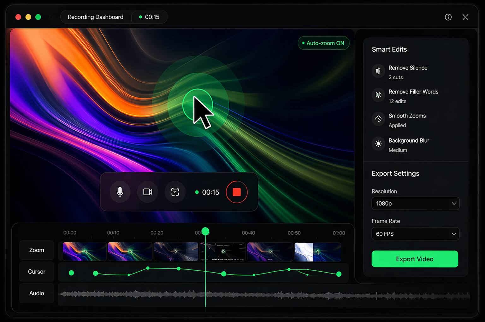

T-01
Auto-zoom on every click.
Critical-damped spring math chases your cursor so zooms feel cinematic, never bouncy. Tunable if you want to nerd out.
DaddyRecorder automatically zooms, cuts and enhances your screen recordings so you can focus on what matters.

Critical-damped spring math chases your cursor so zooms feel cinematic, never bouncy. Tunable if you want to nerd out.
Live preview while you record. Drag it over the screen or over the backdrop. Blur or replace your background with MediaPipe — runs on-device.
A transparent overlay runs the countdown above your actual window, invisible to the recording thanks to macOS content protection.
Split, trim, pick aspect ratio, add a background, drop a browser frame. The clip is ready the moment you stop recording.
No save dialogs, no filename prompts. Finder reveals the export the instant it lands. Recent clips live in your menu bar.
From anywhere on your Mac. A 3-2-1 overlay lands on the screen you picked. MediaRecorder starts the instant it's gone.
Your cursor, clicks, and webcam are being watched. Auto-zoom follows. macOS Portrait / Center Stage stack on top if you want.
Editor opens with the take. Tweak if you want. Export lands in ~/Movies/DaddyRecorder. Done.
Clean timeline. Easy controls. Everything you need, nothing you don't.
Free while we launch. Native Mac app, Apple silicon, no account required.
Download DaddyRecorder DMG · 94 MB · arm64First launch: right-click → Open to get past macOS's "unidentified developer" warning. We'll sign the next release.